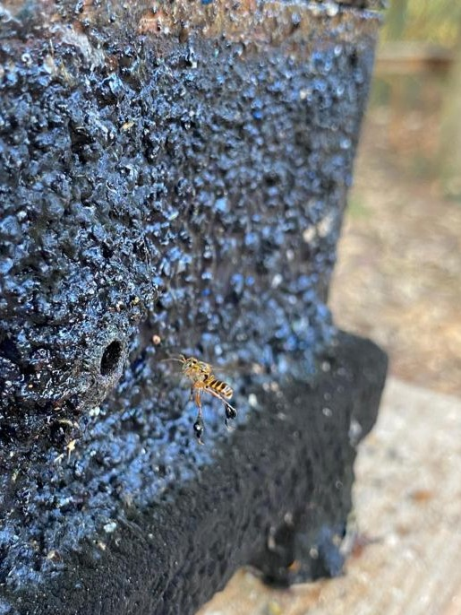

Curiosidades
Nomes populares: Além de Abelha-marmelada também é conhecida como
Abelha-sem-ferrão
Abelha-ruiva
Melipona

Coméia de Marmelada (Frieseomelitta varia)
Comportamento social: Apresenta um comportamento social caracterizado pela formação de colônias cooperativas,
onde as operárias se dedicam a cuidar da rainha, coletar alimento e cuidar da prole.
Produtos: produz mel, que pode ser utilizado para fazer produtos como hidromel,
doces, cosméticos e medicamentos naturais. Além do mel, ela também gera própolis e cera, que têm
aplicações na apicultura e na indústria cosmética.
.webp) Produto feito de própolis
Produto feito de própolis
(Não patrocinado)
Construção do favo: constrói favos de cera com células hexagonais, que são utilizados para armazenar mel, pólen e criar larvas.
Os favos são geralmente mais finos e menos densos do que os de abelhas de maior porte, refletindo seu estilo de vida e comportamento social.
Resistência a doenças: apresenta uma resistência relativamente alta a várias doenças e parasitas,
em parte devido ao seu sistema social e práticas de higiene, como a limpeza do ninho e o uso de própolis para desinfecção